Autoresearch log · BAMFORESTS · 20 Sep 2026 · updated after H11
Eleven pre-registered hypotheses. Seven were refuted, including every headline prediction I made about how to fix the pipeline — and the refutations located the problem far more precisely than the confirmations did. They converge on one relationship that explains six separate failures at once: every head in this network learns where its structure is; only heads with enough positive area learn how strongly to say so. Every consumer in the pipeline reads magnitude.
Every number on this page is measured on 60 held-out crops (BAMFORESTS eval indices 100–159) that took no part in any sweep, with tuning on a separate 30-crop split. Transfer is checked on TestSet1 and TestSet2, untouched by all of it.
I ran eight hypotheses before checking what good looks like on this benchmark. TreeCoG reports COCO AP 53.21 and FG-TreeSeg reports mAP@50 67.31; the best configuration here is AP 29.07. Published protocols are not verified to match mine, so treat it as indicative of a large gap rather than a ranking — but 2× is too wide to be protocol alone.
This work is diagnostic, not competitive. It explains where a watershed ITC pipeline loses its accuracy, and shows the decoder is not the limit. It does not produce a state-of-the-art detector. Checking the literature earlier would also have surfaced that TreeCoG uses the same over-segment-then-merge paradigm I tested in H2 — which means my "the framework tops out at ~70" claim was scoped too widely and bounds only this pipeline's basins. Corrected in place.
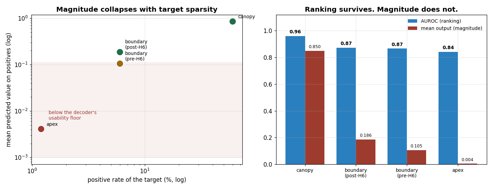
This one relationship retro-explains six results: why the merge threshold in H2 never fired at any value ≥ 0.35, why canopy − λ·B in H4 was flat across the whole sweep, why the rank transform in H5 amplified noise instead of recovering signal, why the calibrated loss in H6 helped, why apex seeding in H7 collapsed, and why calibration turned out to be a robustness intervention in H10.
I originally wrote that H7's apex head "never learned", reading its loss flatline at ~1.00 as zero overlap with the target. That was wrong. The head reaches AUROC 0.841 against crown centres — almost the surface head's 0.863. What it lacks is magnitude: mean 0.0041, p99 0.0212, so the seeding threshold of 0.10 sat above its 99th percentile. The flatline was measuring magnitude collapse, not absence of learning. H7's conclusion survived; its reason did not. The lesson is now standing policy: never diagnose a head from its loss value alone — check AUROC separately from the output distribution.
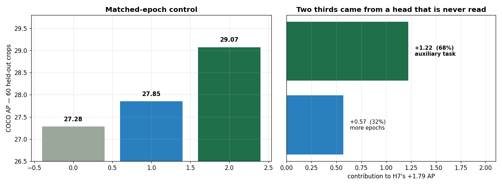
It costs nothing at inference, needs no change to the decoder, and uses a target that was already being computed and thrown away on every training step.
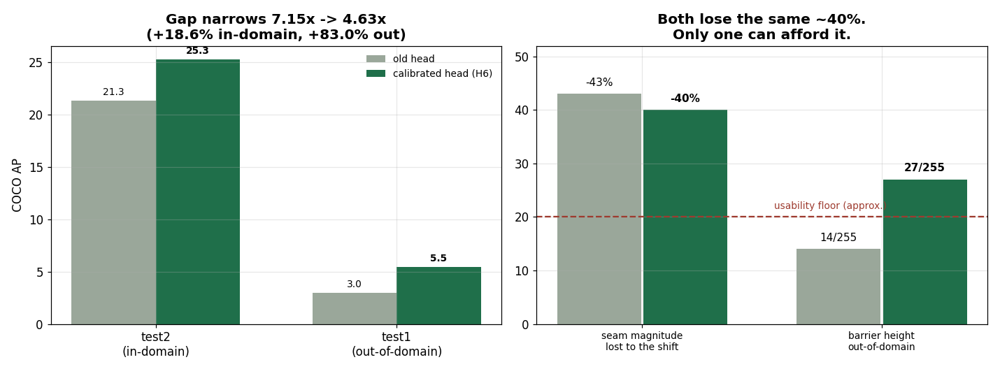
boundary × 255, so out-of-domain the old head sits at ~14/255 and the calibrated one at ~27/255. Below some ridge height the watershed cannot hold a boundary at all. The shift costs both heads the same; only one can afford it.Two details confirm the reading: the old head's seam-to-background ratio is actually higher out-of-domain (8.69 vs 7.23), so ranking is fine and magnitude is the problem; and the canopy head barely degrades (AUROC 0.929 → 0.921), so the fragility is specific to the collapsed head. Caveat worth keeping attached: TestSet1's absolutes are small (2.98 → 5.46), so +83% is change on a low base.
TestSet1 is the benchmark's designated out-of-domain split — a city park rather than managed forest, captured with a different UAV and sensor, at a different altitude, date and time of day. I first attributed its collapse to crown scale (314 px vs 211 px diameter). Test-time rescaling settles it: the optimum lands exactly on the predicted scale-matching factor and the in-domain control is perfectly flat, so the effect is genuinely the scale axis — and it recovers only 7.3% of the gap. About 93% is appearance and structure. Multi-scale training targets the 7%; the lever is photometric.
The repo's evaluate_metrics reports the F1 score at a fixed IoU while naming it ap50. I built a real 101-point interpolated AP and re-scored everything. The ordering is unchanged, so no conclusion moved — but the absolute numbers are much lower, and this page now quotes COCO AP throughout. Where the two disagree, AP is the one to trust. Earlier F1 figures are kept only where they make a comparison clearer, and labelled as such.
Panoptic quality factorises as PQ = SQ × RQ. The published pipeline scored SQ 67.7 and RQ 31.3. That says the masks are broadly fine and the recognition is broken — crowns that never get matched at all. Meanwhile the effort in flight was boundary refinement: MorphSnakes and adaptive spline smoothing, which moved mAP@50 from 31.33 to 32.99.
A +1.66 intervention was being applied to a problem whose recoverable budget, as the first experiment showed, was about +40.
Each hypothesis was committed to git with numeric predictions before it ran. Verdicts are against those pre-registered thresholds, not against what looked good afterwards.
Swapping in oracle seeds while keeping the predicted boundary field: 31.3 → 70.8. Swapping in oracle energy while keeping predicted seeds: 31.3 → 29.9. Marker selection owned essentially the whole budget.
The mechanism was visible in one number: the pipeline emitted 1.90 seeds per true crown, which is exactly what the Dao over-segmentation index (OS = 0.47) had been reporting all along.
The surface target is normalised per instance (mask_edt / mask_edt.max()), so every crown peaks at 1.0 and the head is scale-blind by construction. I predicted a per-peak radius read off the superlevel sets would beat any global radius. It lost — 51.20 against 52.87 — because the estimator is noise-dominated: components merge at low thresholds and shatter at high ones.
The more embarrassing failure was mine. My locked grid peaked at its own upper corner, which means it never found an optimum. Extending it revealed the real story: BAMFORESTS crowns average ~146 px equivalent diameter, and the published min_distance was 24 px. Setting it to one crown diameter is worth +21.2 mAP@50 on held-out data.
Loose suppression finds 83.1% of all crowns but plants 0.82 duplicate seeds in each; tight suppression removes the duplicates and misses 37.5% of crowns. I expected merging to escape that trade-off and predicted an oracle-merge ceiling above 80.
The oracle merge reached only 69.74. That is the result that reframed the project — see below.
H0 varied two factors and silently held the canopy gate fixed in all four cells — a gap in my own design. The full 2³ factorial inverted both of my predictions and produced the sharpest result of the day.
Every single-factor oracle makes things worse. Correct canopy alone: −24.3. Correct boundary alone: −32.5. Correct both: +12.4. Add correct seeds and the same unmodified decoder reaches 97.30 mAP@50 / 93.10 mAP@75.
canopy − λ·BFlat across the entire sweep — λ from 0 to 2 moved mAP@50 by less than 0.2. A null result, but a diagnostic one: it can only happen if B is essentially zero everywhere.
Measured against ground-truth seams, B scores AUROC 0.866 — it knows where the seams are — while its median output is 0.0011 and it averages just 0.105 on true seam pixels. That is a calibration failure from the ~6% positive rate, not a failure to learn.
I predicted a rank transform would recover the information. It cost 9.4 points. The ordering inside the near-zero bulk is noise, and spreading it across the full range manufactures ridges everywhere. Percentile-based merging did give a small real gain (+1.4) and is the best configuration found.
The first training run of the project — a copy of the training script with only the boundary term changed (per-batch balanced BCE + asymmetric Tversky), so the comparison isolates one factor. Three predictions failed, and it is still the largest single step since the decode constants: COCO AP 24.32 → 26.84, AP75 16.48 → 20.40, F1@75 30.45 → 37.06.
My success criterion of "mean boundary response above 0.40 on true seams" was invented, not derived. It reached 0.186. But the flood relief is boundary × 255, so that nearly doubles the barrier between crowns — plainly enough to change flooding, and it did. The criterion failed while the mechanism it was meant to test held.
One eval-chosen setting lands within 1.35 F1@50 of each test split's own swept optimum, on two splits untouched by any tuning. The published 24 px collapses off-split — on TestSet1 it emits 3.18 seeds per crown and falls to COCO AP 0.86.
But the result that matters was not one I predicted — see below.
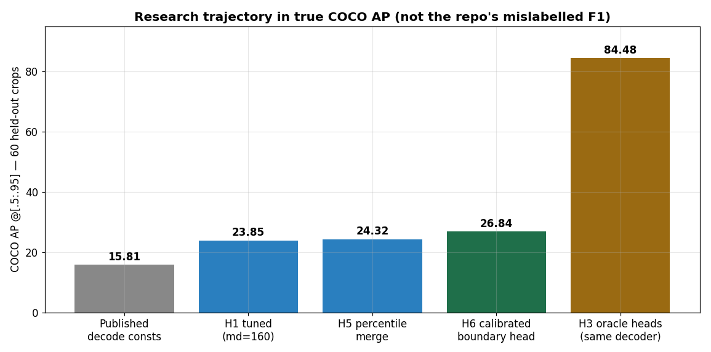
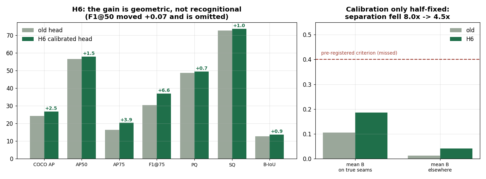
Under the calibrated head, merging now hurts: no-merge scores COCO AP 26.84 against 26.29 for percentile merge and 25.66 for the absolute threshold. The merge step existed to repair over-separation caused by a weak ridge; a stronger ridge separates correctly in the first place, so the repair deletes real boundaries. Drop the merge when using the calibrated checkpoint.
Because class-balanced weighting lifts the whole field rather than sharpening contrast, further boundary work should change the target — a 3 px seam band blurred at σ 0.8 may simply be too thin to supervise at this resolution — rather than the loss weighting. That was the pre-registered fallback, and it is now the live hypothesis.
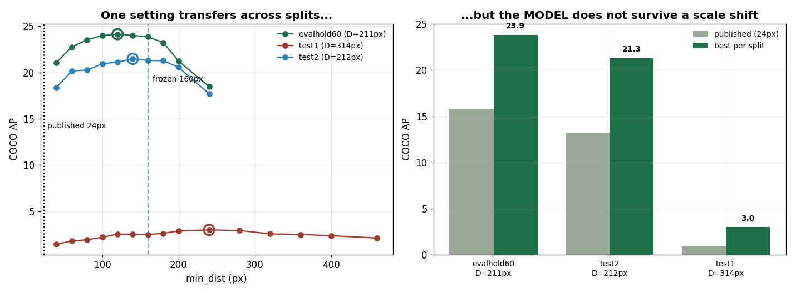
The error budget, the 69–70 marker wall and the oracle ceiling were all measured at one crown scale. None has been shown to hold under a scale shift, and TestSet1 demonstrates the model degrades severely under exactly that shift. Scale generalisation is now the top open question — ahead of further head work, because H6 and H7 may be optimising inside a regime the model cannot leave.
I also nearly published a false rule here. The per-split optima looked like a constant fraction of crown diameter (0.760 and 0.756 on two splits) — until I noticed TestSet1's optimum had landed on the edge of the swept grid, the identical mistake that made H1 report a false optimum. Extending the grid resolved it at 0.892, and scoring by COCO AP instead of F1 widened the spread further to 0.57–0.76. There is no tight law: the honest statement is roughly 0.75× crown diameter, give or take, which is enough to replace a blind 24 px constant and nothing more.
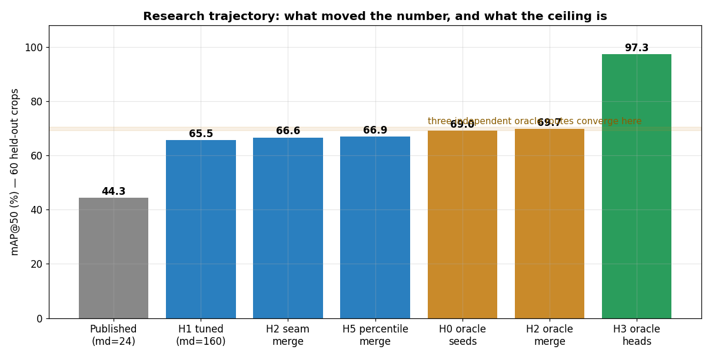
That convergence is the load-bearing result. If perfect markers cannot get past 70, marker selection is finished as a research direction. And since the same decoder reaches 97.3 when the heads are right, the decoder was never the constraint either — despite H2 pointing that way.
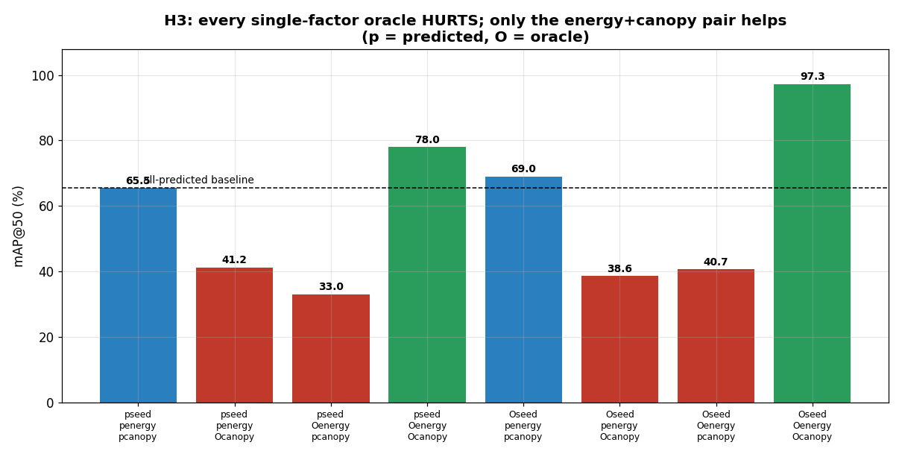
H3's write-up proposed that the predicted canopy gate had quietly become the system's seam detector. The head diagnostic contradicted that — 1 − canopy scores AUROC 0.567 against seams, essentially chance — so I withdrew it and tested the replacement directly. The corrected version holds: the gate is a poor graded seam detector but a strong hard-barrier one. 32.1% of true crown-crown seam pixels already fall in predicted background, against 5.2% of crown interiors — a six-fold enrichment.
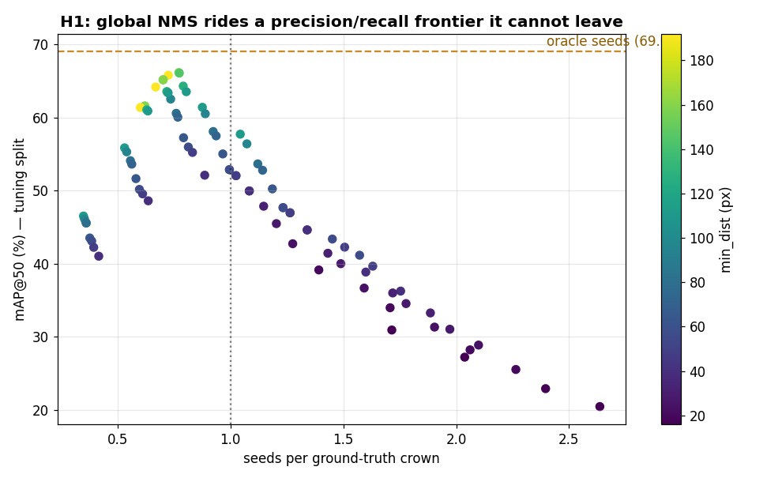
(min_dist, min_apex) setting. Loosening the radius buys recall at the cost of duplicates; tightening it does the reverse. The oracle line sits above the whole cloud because it has both at once.| Configuration | mAP@50 | mAP@75 | PQ | SQ | B-IoU | Dao ED |
|---|---|---|---|---|---|---|
| Published settings (md=24, ma=0.25) | 44.29 | 16.13 | 31.01 | 69.17 | 11.22 | 0.598 |
| H1 tuned constants (md=160, ma=0.50) | 65.54 | 28.47 | 47.42 | 72.13 | 11.65 | 0.644 |
| + H2 seam merge | 66.57 | 30.18 | 48.54 | 72.83 | 12.85 | 0.646 |
| + H5 percentile merge (best found) | 66.91 | 30.45 | 48.82 | 72.78 | 12.84 | 0.638 |
| Oracle seeds (H0) | 69.03 | 29.16 | 49.84 | 72.09 | 12.17 | 0.469 |
| Oracle merge (H2 framework ceiling) | 69.74 | 32.49 | 51.17 | 73.18 | 13.38 | 0.513 |
| Oracle heads, same decoder (H3) | 97.30 | 93.10 | 89.69 | 92.19 | 59.20 | 0.103 |
After H1's +21.2, five decode-side hypotheses have collectively returned +1.4. The remaining ~30 points are in the network.
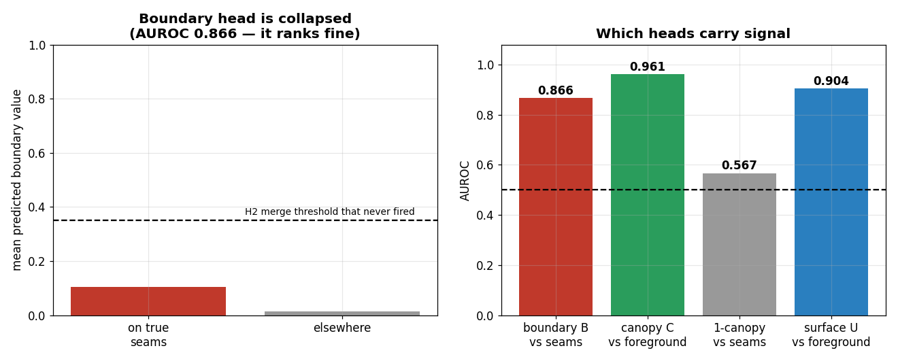
canopy − λ·B coupling in H4 to do anything. Its AUROC of 0.866 says the information is there. Every use of it so far has been an absolute-magnitude use, which is precisely the use a collapsed head cannot support.Missed crowns are not suppressed by NMS (0.1–2.2%); they are never_lit — 28.1% of crowns at the tuned operating point never raise the surface head above threshold anywhere inside them, and their median area is 1,899 px against 24,382 px for all crowns. The missed crowns are the small ones, and the cause is the same per-instance normalisation that defeated H1: the target asserts a peak of 1.0 for every crown regardless of size.
The fix is already in the codebase. targets_sharp computes a fourth target — a Gaussian apex peak with σ fixed independent of crown size — and the data loader ships it as batch["apex"] on every training step. Nothing reads it; the model has three channels. The one scale-invariant signal in the project is being computed and discarded, and it is exactly what the small-crown failure needs. H7 adds the channel and seeds from it. Currently training.
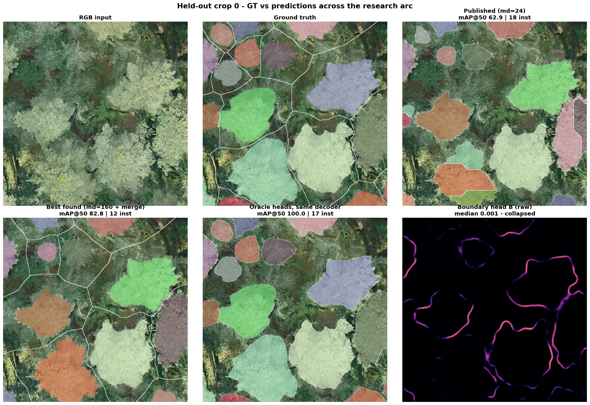
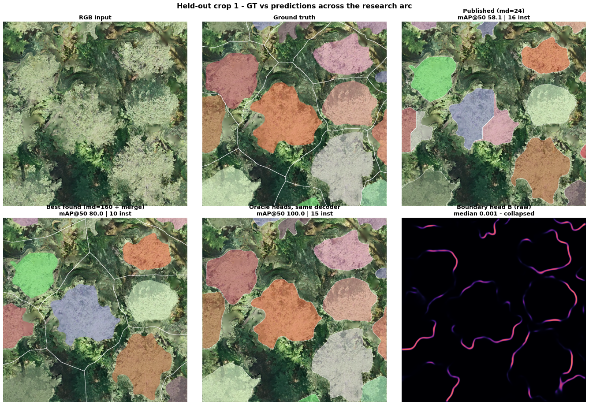
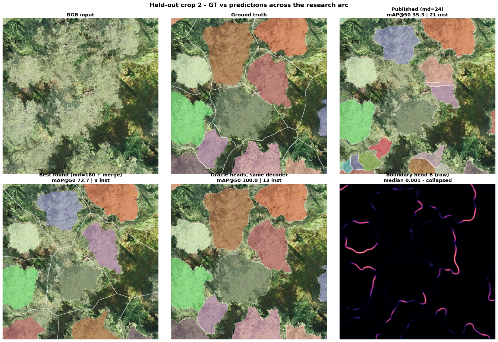
evaluate_metrics reports the F1 score at a fixed IoU threshold while labelling it ap50. crown_research/src/coco_ap.py now provides the real metric — use both, and never quote the repo's ap50 as AP in writing.Head outputs are cached once, after which every sweep above runs on CPU in seconds.
python crown_research/src/pred_cache.py --num_crops 30 --tag eval30
python crown_research/src/pred_cache.py --split eval --start 100 --num_crops 60 --tag evalhold60
python crown_research/experiments/h0-error-budget/code/run_h0.py --num_val 30
python crown_research/experiments/h1-adaptive-seeding/code/run_h1_holdout.py
python crown_research/experiments/h3-canopy-gate/code/run_h3.py
python crown_research/experiments/h5-boundary-calibration/code/run_h5.py
python crown_research/experiments/h5-boundary-calibration/code/rescore_coco_ap.py
python crown_research/experiments/h8-cross-site/code/run_h8.py
python crown_research/src/make_figures.py && python crown_research/src/make_figures_v2.pyThe one training run so far:
python crown_segmentation_research/methods/canopy_watershed/train_calibrated.py --epochs 12
python crown_research/experiments/h6-boundary-loss/code/run_h6_eval.py \
--ckpt DeadTrees/experiments/canopy_watershed/best_calibrated_watershed.pth \
--tag h6_final --label "H6 calibrated"Every protocol was committed to git before its run, so the history separates what was predicted from what was found. Narrative and accumulated constraints live in crown_research/findings.md; the decision timeline is in crown_research/research-log.md.